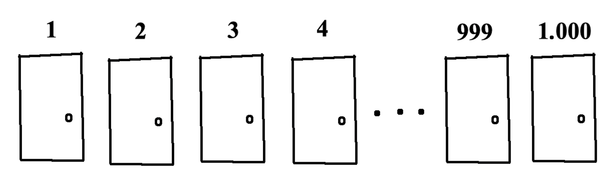
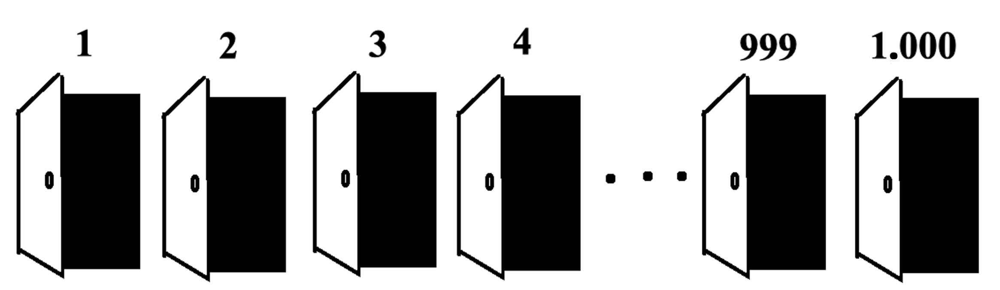
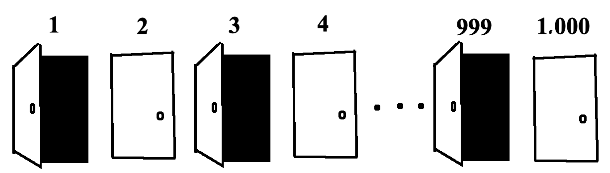
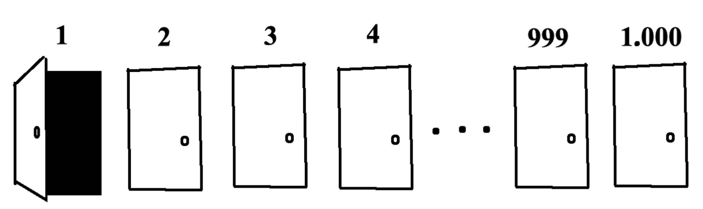

Mille gens font la queue devant mille portes fermées.
fig. 1 mille portes
Soit "appuyer" sur une porte l'acte d'ouvrir la porte si elle est fermée ou fermer la porte si elle est ouverte (oui, ça serait plus simple avec des interrupteurs, mais j'ai déjà dessiné les portes).
La première personne appuie sur chaque porte.
fig. 2 Après que la première personne a appuié sur chaque porte
Ensuite, la deuxième personne appuie sur chaque deuxième porte.
fig. 3 Après que la deuxième personne a appuyé sur chaque deuxième porte
Puis, la troisième personne appuie sur chaque troisième porte.
fig. 4 Après que la troisième personne a appuyé sur chaque troisième porte
Ça continue: la quatrième personne appuie sur chaque quatrième porte, la quinzième personne appuie sur chaque quinzième porte, et ainsi pour toutes les mille personnes. À la fin, combien des portes sont ouvertes? Pourquoi?
27/06/19